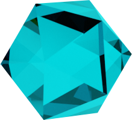

Turquoise also associates with December, bringing its wearer happiness and good fortune. Turquoise used to be an indicator of the wearer's ill health or danger because of the gemstone's ability to change color. Topaz brings good health and prevents headaches. All of the birthstones for December possess healing properties.
